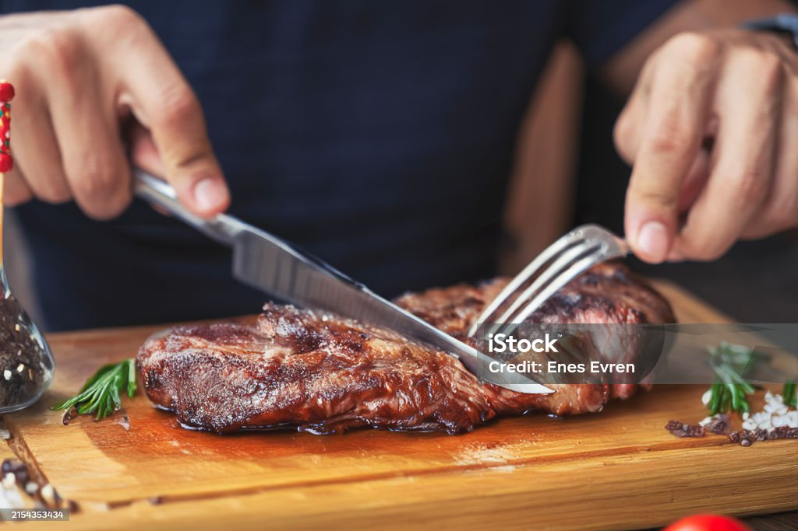

language for creating web pages and web applications.
제대로 된 토마호크 컷은 미국인들이 처음으로 시도했다. 유럽계 이민자들은 미국을 개척하면서 원주민들이 갈비뼈와 등심이 통째로 붙어있는 고기를 뜯어먹는 모습을 보게 되었다. 개척민들은 원주민들이 먹는 고기의 모양이 토마호크 도끼(Tomahawk Axe)와 닮았다고 하여 그렇게 생긴 고기를 토마호크 정형 또는 토마호크 컷(Tomahawk Cut)이라고 부르게 되었다. 시간이 지남에 따라서 토마호크 컷으로 정형되어 나온 고기가 개척민들 사이에서 큰 유행을 탔다.